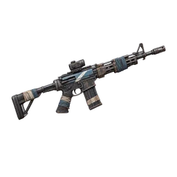
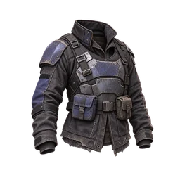
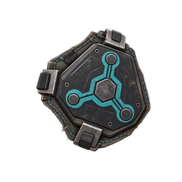
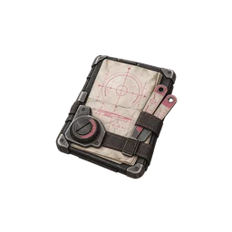
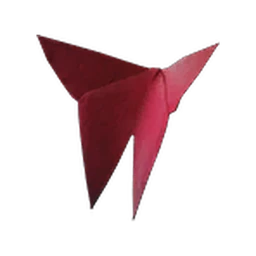
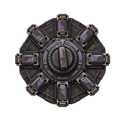

Primary weaponSKS — PathfinderGear Tier V · Blueprint Stars 3
92%Build complete
Armor 6/6Mods 7/7Deviation 1/1Cradle 7/8
Once Human intelligence
Verified player-facing data Open Build LabDatabase + build intelligence
Research the systems behind a Once Human build, then carry verified records directly into one complete planning workspace.
Search across the current player-facing database.
Database

Progression, stats, effects, ammo, and configuration evidence.
120 records →
Gear pieces, key armor, set membership, and activation.
173 pieces · 23 sets →
Current families, main attributes, and fixed sub-attributes.
105 families →
Style effects, rarity records, and legal roll ranges.
94 records →
Player-facing companions and their build-relevant roles.
97 records →
Build-system options organized across all eight slots.
120 options →